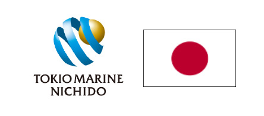
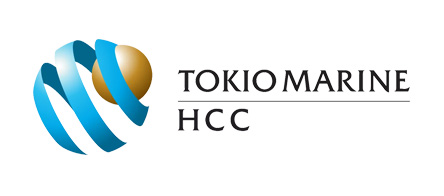
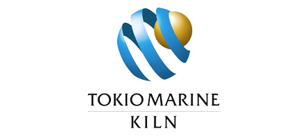
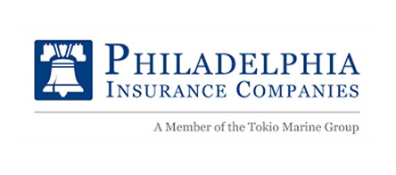
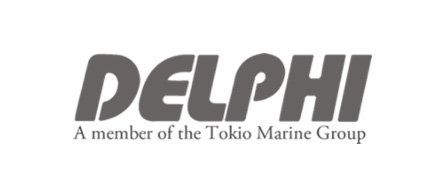
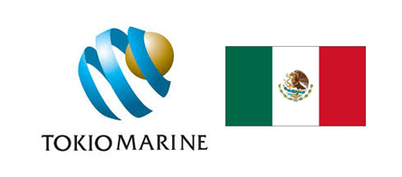
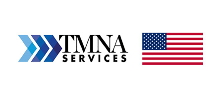

Empresas
Empresas







Presencia Internacional
Reino Unido
Tokio Marine Europe Insurance Limited
Tokio Marine Europe Limited
TM Claims Service Europe Ltd
Tokio Marine Millenium Re (UK)
Tokio Marine Kiln Group Ltd (London)
Tokio Marine HCC (London)
Francia
Tokio Marine Kiln Group Ltd. (Paris, Lyon)
Tokio Marine HCC
Alemania
Tokio Marine Kiln Group Ltd.
Tokio Marine HCC ( Múnich)
Países Bajos
Tokio Marine Kiln Group Ltd. (Ámsterdam)
Tokio Marine HCC (Ámsterdam)
Bélgica
Tokio Marine Kiln Group Ltd. (Bruselas)
Tokio Marine HCC (Lieja)
Egipto
Tokio Marine Egypt General Takaful Company (Cairo)
Tokio Marine Egypt Family Takaful Company (Alexandria)
Emiratos Árabes Unidos
Tokio Marine Middle East Ltd.
Arabia Saudita
Alinma Tokio Marine Company
Turkia
Allianz Sigorta A.S.
Allianz Hayat ve Emeklilik A.S.
Italia
Tokio Marine Kiln Group Ltd. (Milán)
Tokio Marine HCC (Milán)
España
Tokio Marine Kiln Group Ltd. (Barcelona)
Tokio Marine HCC (Barcelona)
Noruega
Tokio Marine Kiln Group Ltd. (Oslo)
Tokio Marine HCC (Leikanger)
Dinamarca
Tokio Marine Kiln Group Ltd. (Copenhague)
Rusia
Tokio Marine Risk AG (Moscou)
Suiza
Tokio Marine Re AG (Zurich)
Tokio Marine HCC (Zurich)
Irlanda
Tokio Marine HCC (Kidanel)
Malasia
Tokio Marine Insurance (Malasia) Berhad
Singapore
Tokio Marine Asia Pte. Ltd.
Tokio Marine Insurance Singapur Ltd.
Tokio Marine Life Insurance Singapur Ltd.
Tokio Marine Insurance Singapur Ltd.
Tokio Marine Retakuful Pte. Ltd.
TM Claims Service Asia Pte.
Indonesia
P.T. Asuransi Tokio Marine Indonesia
PT Tokio Marine Life Insurance Indonesia
República Popular de China
The Tokio Marine & Nichido Fire Insurance Company (China)
Sino Life Insurance Co, Ltd.
Hong Kong
The Tokio Marine & Nichido Fire Insurance Company (Hong Kong)
Taiwán
Tokio Marine Newa Insurance Co, Ltd.
Filipinas
Malayan Insurance Co, Inc.
Vietnam
Baoviet Tokio Marine Insurance Joint Venture Company
Tailandia
Tokio Marine Insurance (Tailandia) Public Company Ltd.
India
IFFCO- TOKIO General Insurance Company Ltd.
Edelweiss Tokio Life Insurance Company Ltd.
Australia
Tokio Marine Management (Australasia) Pty. Ltd.
México
Tokio Marine Compañía de Seguros, S.A. de C.V.
Brasil
Tokio Marine Seguradora S.A.
Paraguay
La Rural S.A de Seguros (Asunción)
Estados Unidos
Tokio Marine North América Inc
TMNA Service (New York)
Tokio Marine America ( NY, Los Ángeles, Chicago, Atlanta, Houston, Nashville, Dallas, San Francisco and Ohio)
TM Claim Service, Inc.
Tokio Marine HCC (Houston)
Tokio Marine Re
Philadelphia Insurance Company
First Insurance Company of Hawái Ltd.
Delphi Financial Group Inc. (NY)
Tokio Marine HCC (Houston)
Tokio Marine Millennium Re (Stanford)
Bermuda
Tokio Millenium Re Ltd.
Tokio Solution Managment Ltd. (Hamilton)
Canada
Tokio Marine & Nichido Fire Insurance Co. Ltd.
Nuestros Colaboradores.
38,842
Empleados de Tokio Marine